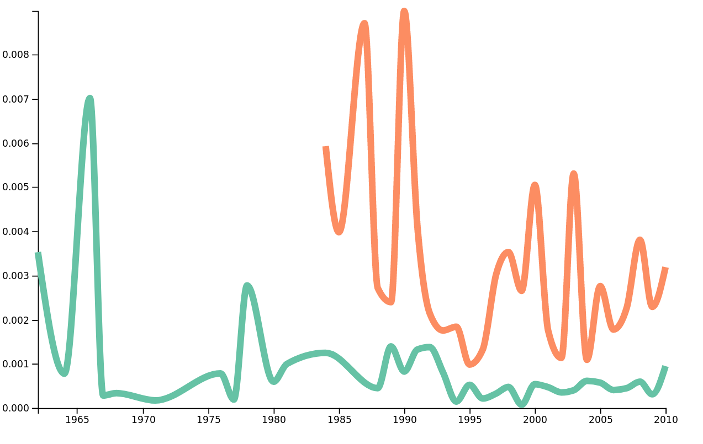

Music is something we all enjoy across all cultures of the world. We all have many ideas about what kind of lyrics or phrases are often used in each genre, but in this project we look into the details of lyrics of many songs to find and vizualize interesting insights about them.
Usually, people associate pop songs to light, and happy themes such as love, and metal songs to darker themes, about death. With this project, you will be able to see if this is true !
Spoiler alert, it is ;)The first thing we have to do is to obtain a list of songs. We used the Million Song Dataset (MSD), which, as its name implies, contains the data "for a million contemporary popular music tracks". This dataset contains a lot of useful information about each song, such as its popularity, its rythm, and many more features related to audio. As we only focus on the lyrics, and not the music, we use it to get the song name, the artist name and the year. However, we are missing two very important fields for our project : the genre of the song, and its lyrics, which are not in this dataset.
The genre of each song can be difficult to obtain as it depends on the definition of each genre, the perception of the listener and even on year of the song. Think about rock for instance : what was called rock in the 50's is very different than what we call rock today. These problems, and the fact that the automatic tagging of a song is very difficult, explain why the Million Song Genre Dataset only has 57.000 songs referenced in it. Nevertheless, we use this dataset to obtain the genres for this reduced set of songs.
For the lyrics, the Million Song Dataset also has a specific dataset which provides a Bag Of Words (BOW) for each song. A BOW only provides a counter for each word in the text, indicating how many times this word is found in this particular text, therefore it does not provide any order for the words. However, for later analysis of the lyrics, a BOW is not enough and we must have the full lyrics. Thus we must get our hands dirty and get the lyrics ourselves. We first found two other datasets which contain lyrics for some songs in our dataset, but not all of them. We thus decided to parse Genius, a website which provides lyrics for thousands of songs.
First, we generate the URLs of the songs we are looking for in the format that Genius uses. These URLs might not be a perfect match, but work in most cases. We used Scrapy, which takes the list of URLs we generate and visits every one of them, collecting the lyrics text from the replies it gets. With this method, we managed to get the lyrics for half of our songs, that is 22.000 lyrics.
To the Genius team : if you saw a spike of traffic from Switzerland in the past few days, it was us ;)Now that we have the lyrics and the genre for each song, we can start the processing the lyrics.
We process the lyrics in three ways :
For all of these steps, we will use Natural Language Processing (NLP) methods, which enable us to automatically extract many features from the lyrics. However, the first step before using these NLP methods is to get the language of each song. We then got our first dilemma : should we keep songs that are not written in English ? The problem with keeping non-English lyrics is that it will decrease the quality of our NLP methods, as we will explain in the part about Topic Analysis. We could also process them separately from the English lyrics, but there are only a few songs that are not in English (less than 10%), so the results would not have been reliable. Thus we chose the least bad solution, which is to discard the non-English songs.
Now that we decided on what to do with these non-English songs, as there is no 'language' field in the dataset, we have to detect the language based on the lyrics. For this part, we used the well-named langdetect library, which uses character N-grams (which are sequences of 1, 2, 3 or more letters), to determine the language of a text. For instance the 3-gram 'ght' is far more present in English than in French, but the inverse is true for the 3-gram 'eau'.
As we now have only English songs we can start the real processing, the first being the sentiment analysis !
The base for sentiment analysis in any text is supervised learning : you need to have a sample of texts, labelled with a number indicating its sentiment, a lower number is a negative sentiment and a higher one is a positive sentiment. Then, with this sample and labels, you can train a classifier, using any supervised learning technique, and then use this classifier to give a sentiment score to every text you want. Luckily for us TextBlob, a famous python NLP library offers both the classifier and the data to train it. After the classifier has been trained, we can simply feed it each lyricis, and it will output its polarity (i.e positivity).
The next task is word analysis, which is the easiest of the three.
The goal of this analysis is to get a Bag Of Words (BOW) for each lyric. One can think that this task is trivial, as it only constits of splitting the lyrics by spaces, and getting the words, but it's more complicated. The first step for this task is the tokenization of the lyrics, that is transforming them in a list of words. This is done by taking into account spaces, tabs, line returns, ponctuation, etc. This is performed once again using TextBlob.
The next step is the removal of the stop words. A stop word is a common word, which doesn't give very useful information, such as "I", "the", "that", etc. Even if these words can sometimes be useful, they are not for our purpose : we do not care about how often the word "the" is present in pop songs.
Finally, the last step is the lemmatization. This consists of mapping each word to its "root" (also called "lemma"), by removing marks of plurals, tenses, etc. This is useful so that every instance of the same lemma will be grouped. For instance, the word "went" will be mapped to "go" and the word "elephants" will be mapped to "elephant".
The final task is topic analysis, the most complex.
First try :
Our first approach concerning the topic analysis was to use a Latent Dirichlet Allocation (LDA) model to get the topics. This method is unsupervised : this means that it will try, given a sample of BOW of lyrics, and the number of topics, to guess to which topics each lyrics correspond. In this model, a topic is simply a distribution of words : for instance a topic about holidays could be : 0.1 * christmas + 0.05 * snow + 0.03 * love + 0.02 * family + ..., and a topic about hapiness would something like : 0.15 * joy + 0.1 * happy + 0.05 * love + ... Similarly, LDA assumes that each text (in our case lyrics), is built as a combination of topics. For instance, a song about happiness on holidays could be represented in this model as 0.5 * hapiness + 0.5 * holidays. Furthermore, this model does not output the name of each topic, this part is left to our human brains ;)
We used SciPy to train and use our LDA model, EXPLIQUER BAD RESULTS + METTRE EXEMPLE
Second try :
While coping with the deception about our LDA model, we looked for another method that could provide us with topics for our lyrics. After some searching we stumbled upon MALLET (MAchine Learning for LanguagE Toolkit), which is a Java package that provides many tools for NLP, and topic modeling. The first 'difficulty' of using it is that, contrary to SciPy, MALLET is not a Python library, thus we first had to output each lyrics to a different file, which will be processed by MALLET. As before, we removed the stop words and the first names of people in the lyrics to get more accurate topics, but there is an important difference between LDA and MALLET's topic modeling : MALLET is not using a BOW, and keeps the sequence of words. This is why we must have the full lyrics and not simply use the BOW provided by the Million Song Dataset. Running MALLET on our preprocessed lyrics, as in the LDA model, outputs the decomposition, of each song between each topic.
This time we got much better results with meaningful topics, which are described in the following table. Note that MALLET only outputs the list of words, and we had to manually infer the topic name.
| Topic | List of words |
|---|---|
| Other | free ring set ding drop loose bomb dong jump killer cha turn mamma cut giddy agus control possibility siúil limbo |
| Break-up | heart cry leave break tear hurt lie feel make back goodbye stop pain save fall wrong die fool turn hold |
| Friendship | thing talk make people friend play good care time walk show remember call game guess smile bad face watch rea |
| Music | sing song hear heaven music play sound word shake call listen voice make world radio tune awake house guitar hum |
| Nature | river sea water wind mountain fly blow sail land tree grow green black young blue white ocean home high snow |
| Feeling | yeah feel wan ooh good tonight alright whoa make beautiful hey real baby high time feeling oooh turn show push |
| AA vernacular | dem man jah yuh woman gal babylon black gyal nuh nah yeh pon shy give hallelujah dis chorus youth agony |
| Time | time life make find world give mind live day change thing lose feel hard chorus long leave matter stay show |
| Love | hold sweet love mine kiss heart dream true make arm lover touch eye woman darling night forever blue give stay |
| Daily life | man money make hand put head work boy pay drink back big good buy gun poor eat kid woman house |
| Life/Death | life dead blood kill death end hate die soul hell mind lie human world pain control fear fuck flesh god |
| Religion | god child lord world soul people bear war mother land die brother man stand father peace men power holy fight |
| Affection | baby girl yeah bad wan make lovin doo babe thing man give bye darlin sugar hey pretty boy crazy fun |
| Transport | hey ride round city drive street car road wheel highway rid york air stop devil house place solid horse girl |
| Weather | night day light sun rain shine morning moon summer star blue christmas tonight bright shin winter dream time end bring |
| Gangsta | hot nigga fuck shit bop dog bitch real back jingle dub drop sex yall wan stuff top pop ahh bell |
| Slang | boy mama goin big lookin easy back nothin runnin comin good feelin bout livin doin walkin cryin talkin hard nice |
| Dance | dance move roll party shake ready music beat night body boogie stop rhythm wild gim groove hand floor make head |
| Dream | eye fall turn light dream feel fire burn watch face fly inside place close hear wall open stand lose run |
| Loneliness | home back long run walk time call train road wait lonely miss side leave bring day line write letter night |
Once the last step were done, we had, for each song :
As our goal is to provide the variations of the sentiment/word frequency/topics based on the genre and year, we need to aggregate our data by genre and year. The precise details of this aggregation are better explained in our notebook, but essentialy we simply obtained the information we were looking for and grouped them by genre and year.
Once this was done, we output, for each genre, a .csv file that contains the variations of the sentiments, and, for each word and topic another .csv file, that contains the variation of the use of this word/topic for the genre over the years.
Finally, as our intent was to provide a way for everyone to explore our results, we created a simple but effective visualization of our data using d3.js, where you can select the data you want to look at and compare it with any other data in our database.
Our pipeline can be seen below :
In the following part, we will show you some results from our data.
 Frequency of the word 'death' in Folk and in MetalWe can see here, with no surprise, that the word 'death' is more present is Metal songs than in Folk songs.
In the following visualization, you will be able to see trends in the words, topics and sentiments through time for the different genres :
With this tool, you are able to select the word or topic you want, provided it is stored in our database, and compare its trend with any other word or topic.
You can use it in full screen width here.
Even if we have a fully working pipeline there is still room for improvement.
The main issue we currently have is that there's simply not enough songs. We started with 1.000.000 with the Million Song Dataset, which is more than enough, but by simply adding the genre with the MSD Genre dataset, this number drops to 57.000. Then, even if our method to get the lyrics works well, sometimes, the lyrics for a given song simply are not available on the web or on any dataset. We could have gotten more lyrics by using the MSD's Musixmatch dataset, but as we previously stated, this would have greatly reduced the quality of the topic modeling. Finally, we further reduced the number of songs to only keep the ones in English, which leaves us with 20.000 songs in the end.
Thus a future work would focus on obtaining a larget dataset containing lyrics and our pipeline would output results that are even more interesting and robust.